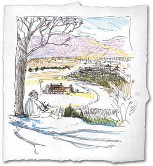
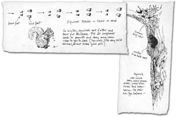

Get To Know Nature
With these fun and easy techniques, you can discover a deeper connection to the world around you.
By Jena Ball
October/November 2006
In today’s accelerated world, it’s important to take time to breathe. Literally, of course, but also to breathe in the sights, s cents and sounds of nature: to watch a sunset, walk through a park or get away from the city lights so you can really see the stars shine. Such examples are easy ways to refresh and energize your body and mind. Also, by keeping a journal and practicing a few simple techniques, you can discover a stronger connection to nature. Not only will you observe unique events, you’ll feel more alive - awake to the world around you and attuned to your connections to it.
That we are drawn to and can be inspired by the natural world should come as no surprise. Because human beings evolved in nature, we have an “instinctive love of living things,” according to Edward O. Wilson, the renowned biologist known as “the father of biodiversity.” Wilson calls this instinct biophilia, and says our inherent capacity to “draw deep excitement and pleasure” from nature has been and always will be essential to our survival.
David Petersen, a former Mother Earth News editor and author of On the Wild Edge: In Search of a Natural Life, concurs with nature’s importance to our past, present and future. “The human species evolved alongside fellow animals of every fur and feather,” he says. “Without our fellow animals, we would not be human. Animals and what remains of the wild, natural world are central to our emotional as well as biological well-being.”
What follows are ideas to help you explore your own instinctive responses to nature and become an amateur naturalist. All you need is an open mind, a journal and a commitment to spend time outdoors. Other inexpensive tools could include books, field guides, watercolors and an assortment of colored pens and pencils.
Find a place
In his book A Sense of Place, artist and conservationist Alan Gussow says, “As humans we require support for our spirits, and this is what certain kinds of places provide. A place is a piece of whole environment that has been claimed by feeling.” Choose a place to study that touches your heart and mind - one that piques your interest and evokes a feeling of connection. Depending on where you live, your back yard may be the nearest option. Other possibilities can be almost anywhere and may surprise you - a rooftop garden or a secluded nook at a city park, for example.
Make a commitment
Like all relationships, getting to know a place takes time. The best way to do this is to regularly visit your place, whether it’s every day, once a month or whatever works for you. Even after several visits, you’ll be amazed at how many “new” things you observe each time.
Keep a journal
Keeping a journal of your experiences and observations is easy and rewarding. Journals build knowledge, help with identification of plants and animals and form the basis for reflective writing. And nature journals can include just about anything: thoughts, facts, descriptions, sketches, questions, charts or poetry. Consider these approaches:
Observe
Make a habit of noting the date, time, location, weather, wind, cloud conditions and your overall impressions each time you visit your place.
Draw
Many people hesitate to draw, but don’t worry about the artistic quality of your sketches. Drawing is a great tool for recording information and will sharpen your ability to observe, identify and pick up on subtle details - you’ll come to terms with your subjects in new ways.
- Draw things at eye and ground level.
- Draw things you see overhead.
- Draw whole landscapes.
- Do quick sketches: 15, 20, 30 seconds.
- Do detailed drawings.
- Sketch something and then write notes beside and/or around the sketch.
- Do a series of drawings on one theme, such as the moon’s phases or how your place changes through the seasons.
Make lists
Listing is a way to celebrate your discoveries, organize your thoughts and keep track of information. List what you see, smell, hear, feel, think about - lists can be about anything.
Reflect
Spend time writing about what you’ve observed and how it has affected you. Let your words flow without pausing to revise. Follow threads of thought to see where they take you.
Awaken the senses
To truly observe and appreciate nature, use all of your senses. Try these simple exercises:
Hearing
Sit in silence with your eyes closed for several minutes. Use your hearing to scan your surroundings. Then open your eyes and listen for several more minutes. Try to associate movements with sounds. Write for five minutes without stopping about what you heard.
Smell
Our sense of smell is not as developed as it is in most animals, but what we smell tends to stay with us. Try sitting quietly for five minutes. Take note of various smells and the images, impressions and feelings they evoke. Next, try walking around to see how and where smells change. Repeat this exercise at different times of day and year, and during different kinds of weather.
Touch
The natural world touches us every day, but we seldom notice it. During walks, be mindful of what you feel from wind, moisture, grass, trees, leaves, etc. Then describe the sensations in writing. Write about the texture of things you find along the way, such as rocks. Also compare and contrast opposites, such as the tops and bottoms of leaves.
Sight
There are many ways to see. For example, a specific goal (such as identifying flowers), will determine where and how you focus your attention. Your mood will also affect how and what you see. Here are some ways to change your focus:
Shift from hard to soft focus: This is a bit like daydreaming. Pick one thing and focus on it normally, but put your attention on your peripheral vision.
Focus on colors: How many different colors and shades can you identify? Come up with creative names for them and see if you can create a palette for a particular place.
Focus on outlines: Look at the edges of things?-?think of objects as pictures in a coloring book. Describe how their edges overlap and fit together.
Focus on relationships: Notice the relationships between plants, animals, insects, trees and the weather. Watch how a bee pollinates flowers while collecting pollen; how small birds chase and agitate a hawk or crow; how squirrels jump from one tree to another.
Focus on details: Take one thing - such as a flower - and examine it from all sides noting everything about it: from its color, size and shape, to the various parts and how they connect.
Focus on light and dark: If you squint you will see things as shades of dark and light rather than shapes.
Focus on spaces: Look at the space between two things, such as the gaps between two trees or the petals of a flower. Draw the spaces instead of the physical object - what do they look like?
Research and learn
Based on the drawings and notes you make in the field, consult dictionaries, field guides and online sources with a goal of building your nature vocabulary and overall understanding of what you observe.
Of all the things you experience as you get to know nature, becoming aware of the larger web of life on which we all depend is arguably the most beneficial. Perhaps the poet Gary Snyder said it best when he wrote, “Nature is not a place to visit, it is home.” Cherish the natural world as your home, and it will always reward you.
Resources for Backyard Naturalists
Books
Keeping a Nature Journal
by Clare Walker Leslie & Charles E. Roth
(Storey Publishing, 2003)
Nature Journal
by Clare Walker Leslie
(Storey Publishing, 2003)
The Sierra Club Guide to Sketching Nature
by Cathy Johnson
(Sierra Club Books, 1997)
A Year in the Life: Journaling for Self-Discovery
by Sheila Bender
(Walking Stick Press, 2000)
Web Sites
Nature Journals as a Tool for Learning
Backyard Nature with Jim Conrad
Freelance writer Jena Ball frequently escapes to the foothills of Pasadena, Calif., to relax and refuel. She also shares her passion for nature writing through online courses.
|
 Clare Walker Leslie Keeping a nature journal can be a relaxing and rewarding experience. See the other images in this gallery for ideas on how to approach your own journal. |
 Clare Walker Leslie Drawing is a great tool for recording for recording information and will sharpen your ability to observe, identify and pick up on subtle details. |
 Clare Walker Leslie As you observe, sketch something and then write notes beside and/or around the sketch. |
 Clare Walker Leslie Listing information next to your sketches is a way to celebrate your discoveries, organize your thoughts and keep track of information. |
|
|